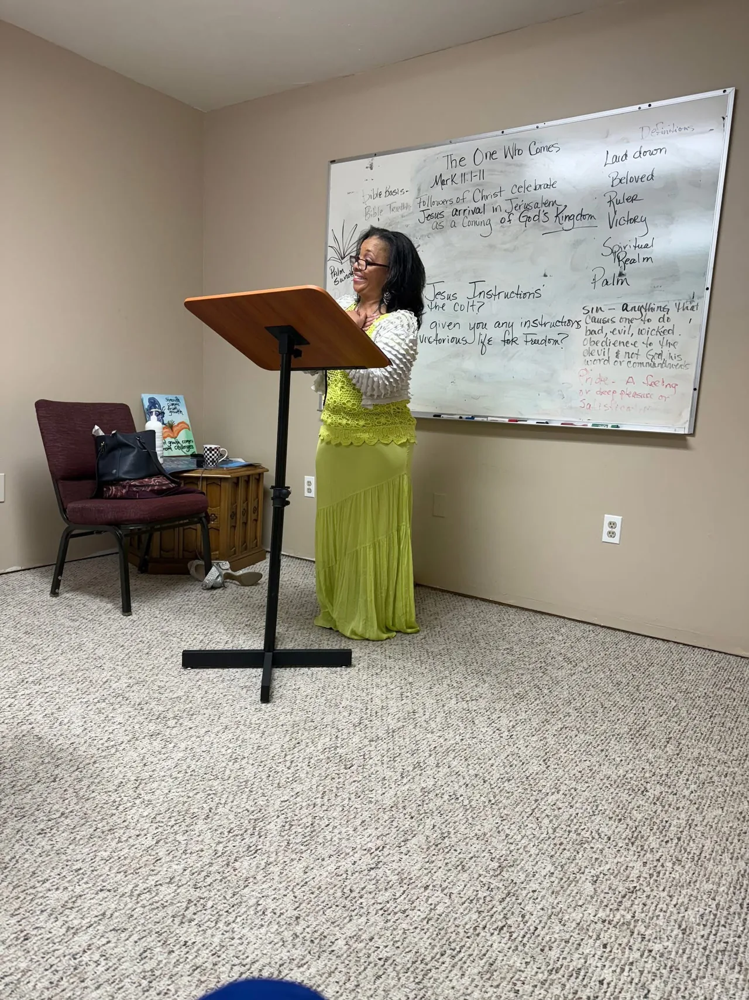

October 17, 2026
Survivor voices, community leaders, and conversations about healing.
12:00–3:00 PM
Ypsilanti District Library Community Room
Visions Leadership Consultant and Life Coach
Visions offers an anger-management course for individuals and organizations, transitional-health guidance, and connected travel experiences.
Current event
What Visions offers
A seven-module Anger Management & Emotional Healing Program for individuals and organizations.
See course optionsPractical guidance when health, home, and daily-life needs are changing.
Explore transitional healthTravel options for individuals and groups through Dare to Dream Travel.
Explore travelFeatured offering · now available
This online course teaches participants to recognize triggers and warning signs, understand emotional and relationship patterns, practice healthier responses, and create a practical anger-management plan.
This is an educational and coaching-based program. It is not medical treatment, psychotherapy, or a guarantee of court, employer, or agency acceptance.

Meet Monique
Monique Foster brings together education, coaching, and leadership experience to give people space to learn, reflect, and use new skills in everyday life.
About Visions and MoniqueFor teams and organizations
Talk with Visions about enrollment, reporting, and pricing for your group.
Discuss an organization plan